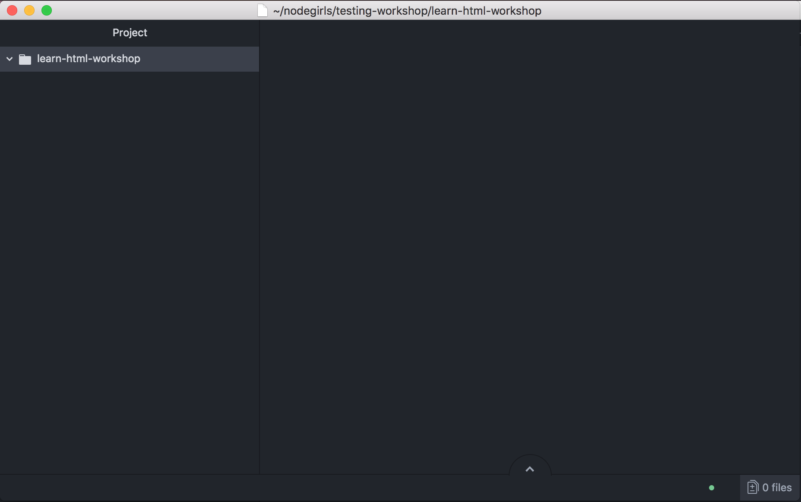
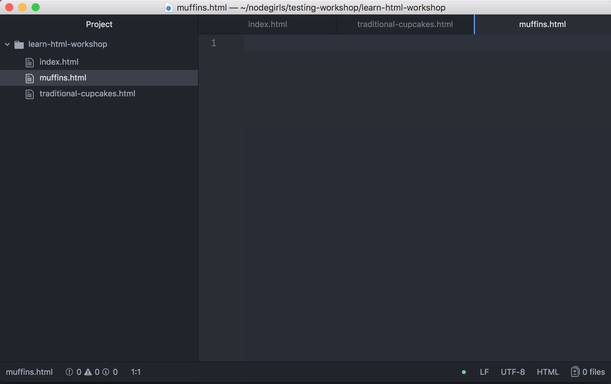
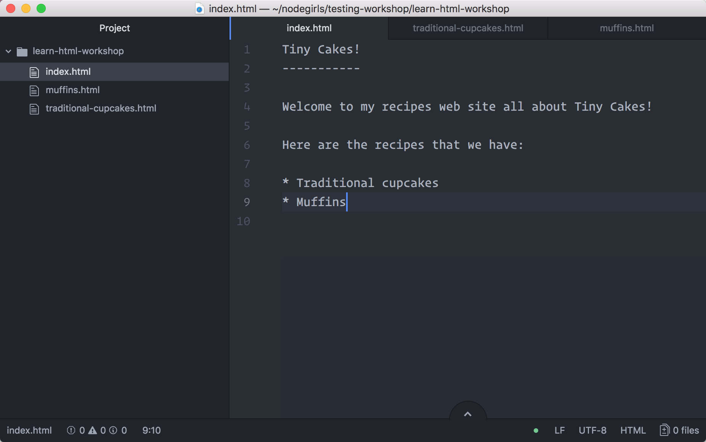

Etapy:
Step 2 - Konfiguracja
Co fajnego stworzymy?
Naszym zadaniem jest nauczenie się HTML i CSS poprzez stworzenie prostej strony z przepisami.

Konfiguracja
Utwórz folder w wybranym dla siebie miejscu na komputerze (najlepiej pulpicie, żeby nie szukać później) i nazwij go warsztaty-html. Wszystko co stworzymy dzisiaj umieścimy w tym folderze.
Teraz otworzymy sobie program VSC. To pierwszy raz kiedy go uruchamiasz, więc pojawi Ci się powitanie i porady. Zamknij je na razie.
Przejdź w menu do zakładki File i wybierz Open Folder, następnie znajdź nasz folder warsztaty-html i otwórz go.
Teraz po lewej stronie programu powinien pojawić się Explorer z widokiem Twojego folderu.

Teraz sobie utworzymy 3 różne pliki na których będziemy pracować. Będą to:
index.htmltraditional-cupcakes.htmlmuffins.html
Aby utworzyć nowy plik w programie, najedź kursorem myszy na otwarty w explorerze folder warsztaty-html. Teraz przy nazwie folderu powinny pojawić się 4 ikony. Kliknij na pierwszą od lewej i wprowadź nazwę pliku w okienku, które pojawi się pod folderem. Możesz również skorzystać z menu file -> new file, ale dzięki użyciu explorera Twój plik od razu zostanie utworzony w miejscu, którym chcesz.
Każdy nowo utworzony plik zostanie automatycznie otworzony w nowej karcie programu.

Po utworzeniu trzech nowych plików o podanych wcześniej nazwach, otwórz każdy z nich w nowej karcie i wklej teksty, które znajdziesz poniżej. Dodaj je do każdego pliku z osobna.

Nie zapomnij zapisać zmian w swoich plikach. Możesz to zrobić w menu File, bądź użyć skrótów klawiszowych: CTRL+s dla systemów Windows oraz Linux, CMD ⌘+s w przypadku systemu macOS.
Porada: Jeśli w pliku pojawiły się niezapisane zmiany zauważysz małą kropkę po prawej stronie zakładki.
Nasza treść
Dla pliku index.html
Tiny Cakes!
-----------
Welcome to my recipes web site all about Tiny Cakes!
Here are the recipes that we have:
* Traditional cupcakes
* Muffins
Dla pliku traditional-cupcakes.html
Traditional Cupcakes
--------------------
Traditional cupcakes are always a crowd-pleaser.
Ingredients:
* 2 cups self-raising flour, sifted
* 3/4 cup CSR Caster Sugar
* 2 eggs, beaten
* 3/4 cup milk
* 125g butter, melted, cooled
* 1 teaspoon vanilla essence
* Sprinkles, to decorate
* 1 1/2 cups CSR Pure Icing Sugar
* 1-1 1/2 tablespoons water
* food colouring, optional
Method:
1. Preheat oven to 200°C or 180°C fan-forced.
2. Grease a 12 x 1/3-cup capacity muffin pan. Alternatively, line holes with paper cases.
3. Combine flour and caster sugar in a bowl. Make a well in the centre.
4. Add milk, butter, eggs and vanilla to flour mixture. Using a large metal spoon, stir gently to combine.
5. Spoon mixture into prepared muffin pan. Bake for 12 to 15 minutes, or until a skewer inserted into the centre comes out clean.
6. Stand in pan for 5 minutes before transferring to a wire rack to cool.
7. Make icing:
1. Sift icing sugar into a bowl.
2. Add food colouring and water.
3. Stir until smooth and well combined.
8. Spoon icing over cupcakes.
9. Decorate with sprinkles.
Dla pliku muffins.html
Muffins
-------
This recipe makes 12 plain muffins.
Refer to directions at the bottom for how to modify the recipe for different types of muffins.
Ingredients:
* 2 cups white flour
* 1 tablespoon baking powder
* 1/2 teaspoon salt
* 2 tablespoons sugar
* 1 egg, slightly beaten
* 1 cup milk
* 1/4 cup melted butter
Method:
1. Preheat the oven to 375°F.
2. Butter muffin pans.
3. Mix the flour, baking powder, salt, and sugar in a large bowl.
4. Add the egg, milk, and butter, stirring only enough to dampen the flour; the batter should not be smooth.
5. Spoon into the muffin pans, filling each cup about two-thirds full.
6. Bake for about 20 to 25 minutes each.
Variations:
Blueberry Muffins:
* Use 1/2 cup sugar.
* Reserve 1/4 cup of the flour, sprinkle it over 1 cup blueberries, and stir them into the batter last.
Pecan Muffins:
* Use 1/4 cup sugar.
* Add 1/2 cup chopped pecans to the batter.
* After filling the cups, sprinkle with sugar, cinnamon, and more chopped nuts.
Whole-Wheat Muffins:
* Use 3/4 cup whole-wheat flour and 1 cup white flour.
Date or Raisin Muffins:
* Add 1/2 cup chopped pitted dates or 1/3 cup raisins to the batter.
Bacon Muffins:
* Add 3 strips bacon, fried crisp and crumbled, to the batter.
Pod dodaniu zawartości do każdego pliku przejdź do kolejnego etapu :)